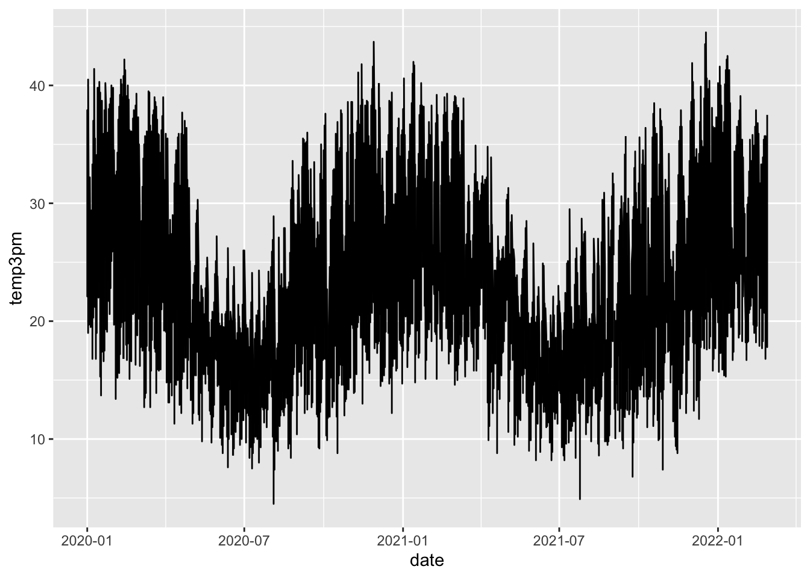

── Attaching core tidyverse packages ──────────────────────── tidyverse 2.0.0 ──
✔ dplyr 1.1.4 ✔ readr 2.1.5
✔ forcats 1.0.0 ✔ stringr 1.5.1
✔ ggplot2 3.5.1 ✔ tibble 3.2.1
✔ lubridate 1.9.4 ✔ tidyr 1.3.1
✔ purrr 1.0.4
── Conflicts ────────────────────────────────────────── tidyverse_conflicts() ──
✖ dplyr::filter() masks stats::filter()
✖ dplyr::lag() masks stats::lag()
ℹ Use the conflicted package (<http://conflicted.r-lib.org/>) to force all conflicts to become errors13 Mulivariate Viz
Use this file for practice with the mulivariate viz in-class activity. Refer to the class website for details.
Check out the first 6 rows # What are the units of observation?
14 How many data points do we have?
nrow(weather) –> 2367 # What type of variables do we have? str(weather –> data frame; num, chr, int,
date location mintemp maxtemp rainfall evaporation sunshine
1 2020-01-01 Wollongong 17.1 23.1 0 NA NA
2 2020-01-02 Wollongong 17.7 24.2 0 NA NA
3 2020-01-03 Wollongong 19.7 26.8 0 NA NA
4 2020-01-04 Wollongong 20.4 35.5 0 NA NA
5 2020-01-05 Wollongong 19.8 21.4 0 NA NA
6 2020-01-06 Wollongong 18.3 22.9 0 NA NA
windgustdir windgustspeed winddir9am winddir3pm windspeed9am windspeed3pm
1 SSW 39 SSW SSE 20 15
2 SSW 37 S ENE 13 15
3 NE 41 NNW NNE 7 17
4 SSW 78 NE NNE 15 17
5 SSW 57 SSW S 31 35
6 NE 35 ESE NE 17 20
humidity9am humidity3pm pressure9am pressure3pm cloud9am cloud3pm temp9am
1 69 64 1014.9 1014.0 8 1 19.1
2 72 54 1020.1 1017.7 7 1 19.8
3 72 71 1017.5 1013.0 6 NA 23.4
4 77 69 1008.8 1003.9 NA NA 24.5
5 70 75 1018.9 1019.9 NA 7 20.7
6 71 71 1021.2 1018.2 NA NA 20.9
temp3pm raintoday risk_mm raintomorrow
1 22.9 No 0.0 No
2 23.6 No 0.0 No
3 25.7 No 0.0 No
4 26.7 No 0.0 No
5 20.0 No 0.0 No
6 22.6 No 0.8 NoExample 1
Warning: Removed 19 rows containing missing values or values outside the scale range
(`geom_point()`).I got this wrong, i shouldve contructed a desity plot of only temp3pm
14.1 Example 2

14.2 Example 2
Warning: Removed 19 rows containing non-finite outside the scale range
(`stat_density()`).
#plot 2
# Plot 2 (no facets or densities)
ggplot(weather, aes(y = temp3pm, x = location)) +
geom_boxplot()Warning: Removed 19 rows containing non-finite outside the scale range
(`stat_boxplot()`).
Warning: Removed 19 rows containing non-finite outside the scale range
(`stat_count()`).I also got this one wrong; I should’ve constructed 3 side-by-side density graphs
14.3 Example 3
# How often does it raintoday?
# Fill your geometric layer with the color blue.
ggplot(woll, aes(x = raintoday)) +
geom_bar(fill="lightblue") What does it tell us about rain tomorrow?
`geom_smooth()` using method = 'loess' and formula = 'y ~ x'I did this wrong; I should’ve constructed bar graphs
# Now compare different approaches
# Default: stacked bars
ggplot(woll, aes(x = raintoday, fill = raintomorrow)) +
geom_bar()
# Side-by-side bars
ggplot(woll, aes(x = raintoday, fill = raintomorrow)) +
geom_bar(position = "dodge")
# Proportional bars
# position = "fill" refers to filling the frame, nothing to do with the color-related fill
ggplot(woll, aes(x = raintoday, fill = raintomorrow)) +
geom_bar(position = "fill")
# Instead of a curve that captures the general TREND,
# draw a line that illustrates the movement of RAW temperatures from day to day
# NOTE: We haven't learned this geom yet! Guess.
ggplot(woll, aes(y = temp3pm, x = date))
geom_smooth: na.rm = FALSE, orientation = NA, se = TRUE
stat_smooth: na.rm = FALSE, orientation = NA, se = TRUE
position_identity I don’t know what to do here
answer: ggplot(woll, aes(y = temp3pm, x = date)) + geom_point() + geom_smooth(span = 0.5)
And for raw:

14.4 Exercise 5
# Plot temp3pm vs temp9am
# Change the code in order to indicate the location to which each data point corresponds
ggplot(weather, aes(y = temp3pm, x = temp9am,color=location)) +
geom_point()Warning: Removed 27 rows containing missing values or values outside the scale range
(`geom_point()`).
I have no idea Answer:
Warning: Removed 27 rows containing missing values or values outside the scale range
(`geom_point()`).
Example 6
# Change the code in order to construct a line plot of temp3pm vs date for each separate location (no points!)
ggplot(weather, aes(y = temp3pm, x = date)) +
geom_line()
I still have no idea Answer: ggplot(weather, aes(y = temp3pm, x = date, color = location)) + geom_line()
Exercise 7
# Plot the relationship of raintomorrow & raintoday
# Change the code in order to indicate this relationship by location
ggplot(weather, aes(x = raintoday, fill = raintomorrow)) +
geom_bar(position = "fill")nothing
Answer: ggplot(weather, aes(x = raintoday, fill = raintomorrow)) + geom_bar(position = “fill”) + facet_wrap(~ location)
14.4.1 Exercises
# Import and check out data
education <- read.csv("https://mac-stat.github.io/data/sat.csv")
head(education) State expend ratio salary frac verbal math sat fracCat
1 Alabama 4.405 17.2 31.144 8 491 538 1029 (0,15]
2 Alaska 8.963 17.6 47.951 47 445 489 934 (45,100]
3 Arizona 4.778 19.3 32.175 27 448 496 944 (15,45]
4 Arkansas 4.459 17.1 28.934 6 482 523 1005 (0,15]
5 California 4.992 24.0 41.078 45 417 485 902 (15,45]
6 Colorado 5.443 18.4 34.571 29 462 518 980 (15,45]Part a
Part b Range 800 to 1100 Typical: 900 and to a lesser extent 1050 Shape: two humps (I forgot the name)
14.5 Exercise 2
Part a
`geom_smooth()` using formula = 'y ~ x'`geom_smooth()` using formula = 'y ~ x'
Part b
Interesting that these are both plots with negative relatiobships, it seems like more fundint would mean better scores, but its the opposite, and the same for teacher salary.
14.6 Exercise 3
14.7 Exercise 4

14.8 Exercise 5
14.8.1 Part a

14.8.2 Part b
14.8.3 Part c
`geom_smooth()` using formula = 'y ~ x'The stats with less expenditure also took fewer SATs, so the people who do take it stand out as outstanding students; simpson’s paradox